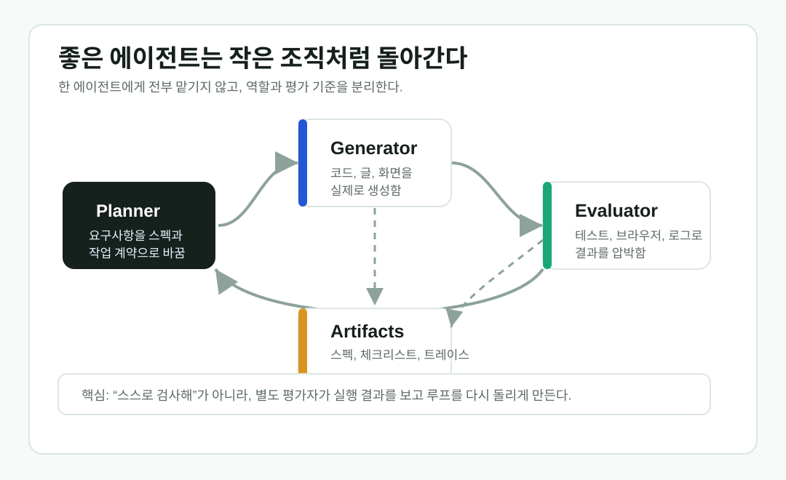

5.5 시대의 AI 사용법: 프롬프트보다 하니스 엔지니어링
AI를 잘 쓰는 방법이 바뀌고 있다. 예전에는 좋은 프롬프트를 쓰는 사람이 앞섰다. 5.5 시대에는 한 문장을 잘 쓰는 것보다, AI가 계속 일하고 검증하고 다시 고치게 만드는 실행 환경을 설계하는 능력이 더 중요해지고 있다. 이 변화의 핵심이 loop engineering과 harness engineering이다.
Core Idea
루프는 일하는 절차이고, 하니스는 그 절차가 돌아가는 작업장이다
프롬프트는 AI에게 무엇을 하라고 말하는 문장이다. 루프는 계획, 실행, 검증, 수정이 반복되는 구조다. 하니스는 그 루프가 실제로 움직이도록 도구, 권한, 메모리, 로그, 승인 규칙, 실패 복구 방식을 묶어놓은 실행 장치다.

2026.06.23 Update
Anthropic식 루프의 핵심은 역할 분리다
참고 글에서 가장 보강할 만한 지점은 “긴 시간 돌리는 에이전트는 한 명의 만능 작업자가 아니라 작은 조직처럼 설계된다”는 점이다. Planner는 요구를 스펙으로 바꾸고, Generator는 실제 산출물을 만들고, Evaluator는 브라우저와 테스트, 로그를 보며 결과를 압박한다. 이 셋이 같은 기억과 같은 성격을 공유하면 자기합리화가 생기기 쉽다. 그래서 좋은 하니스는 역할, 컨텍스트, 권한, 종료 조건을 분리한다.

왜 지금 하니스가 중요해졌나
생성형 AI 초창기에는 대부분의 사용이 대화창 안에서 끝났다. 사용자가 질문을 쓰고, 모델이 답하고, 사용자가 다시 질문을 고치는 방식이었다. 이때는 프롬프트 엔지니어링이 핵심이었다. 하지만 AI가 코드 수정, 리서치, 문서 작성, 데이터 분석, 업무 자동화까지 맡기 시작하면서 문제가 달라졌다. 이제 AI는 한 번 답하는 도구가 아니라 여러 단계를 거쳐 작업을 끝내야 하는 실행자에 가까워졌다.
실행자가 되려면 문장만으로는 부족하다. 어떤 파일을 읽을 수 있는지, 어떤 명령을 실행할 수 있는지, 실패했을 때 어디까지 다시 시도할 수 있는지, 사람이 언제 승인해야 하는지, 결과가 맞는지 어떻게 검사할지 정해야 한다. 이 전체 환경이 하니스다. 그래서 5.5 시대의 AI 활용은 프롬프트 작성에서 하니스 설계로 중심이 이동하고 있다.
루프 엔지니어링이란 무엇인가
루프 엔지니어링은 AI가 한 번 답하고 끝나는 것이 아니라, 목표를 향해 반복적으로 움직이게 만드는 방식이다. 가장 단순한 루프는 계획, 실행, 확인, 수정이다. 조금 더 실무적으로 쓰면 조사, 초안 작성, 검증, 보완, 최종 보고처럼 나뉜다.
리서치 루프 예시
1. 최근 쟁점을 수집한다.
2. 이미 다룬 주제와 겹치는지 확인한다.
3. 공식 발표와 주요 매체를 교차 확인한다.
4. 핵심 질문을 정리한다.
5. 초안을 작성한다.
6. 출처, 날짜, 수치를 다시 확인한다.
7. 불확실한 내용은 단정하지 않는다.여기서 중요한 점은 AI에게 “좋은 글을 써줘”라고만 하지 않는다는 것이다. AI가 어떤 순서로 생각하고, 어떤 기준으로 판단하고, 어디서 멈춰야 하는지를 루프로 만든다. 그래서 같은 모델을 써도 루프가 좋으면 결과가 안정되고, 루프가 없으면 결과가 매번 흔들린다.
왜 자기 평가만으로는 부족한가
참고 글의 좋은 포인트는 “만든 에이전트에게 스스로 검사하라고 하지 말라”는 부분이다. 같은 컨텍스트에서 만든 결과를 같은 컨텍스트로 평가하면, 모델은 자기가 세운 가정과 실수를 그대로 끌고 가기 쉽다. 사람으로 치면 작성자 본인이 검수표도 만들고, 검수도 하고, 통과 도장까지 찍는 구조다.
그래서 긴 작업에서는 별도 평가자가 필요하다. 평가자는 코드만 읽는 것이 아니라 실제로 앱을 실행하고, 브라우저 콘솔 에러를 보고, 네트워크 실패를 확인하고, 모바일 화면에서 레이아웃이 깨지는지도 봐야 한다. 글쓰기에서도 마찬가지다. 출처 링크가 살아 있는지, 날짜가 맞는지, 과장 표현이 있는지, 근거가 충분한지를 별도 루프로 검사해야 한다.
하니스 엔지니어링이란 무엇인가
하니스 엔지니어링은 그 루프가 실제로 실행될 수 있게 환경을 설계하는 일이다. 최근 Claude Code 문서에서 자주 보이는 hooks, subagents, memory, slash commands, MCP 같은 기능과 OpenAI Agents SDK의 tools, handoffs, guardrails, sessions, tracing 같은 기능은 모두 하니스의 구성 요소로 볼 수 있다.
| 구성 요소 | 하는 일 | 실제 예시 |
|---|---|---|
| instructions | 에이전트의 역할과 금지 규칙을 정한다. | 공식 출처 없이 단정하지 말 것, 외부 공개 전 확인할 것. |
| tools | 검색, 파일 읽기, 테스트 실행, 브라우저 확인 같은 행동을 가능하게 한다. | 웹 검색, GitHub 이슈 확인, 테스트 실행, 문서 렌더링. |
| memory | 반복되는 프로젝트 규칙과 이전 결정을 저장한다. | 이미 다룬 주제는 다시 반복하지 않는다. |
| hooks | 특정 시점에 자동 검사를 실행한다. | 파일 수정 후 테스트 실행, 위험 명령 실행 전 차단. |
| subagents | 작업을 역할별로 나눈다. | 조사 담당, 초안 담당, 사실 검증 담당, 코드 리뷰 담당. |
| guardrails | 위험한 입력과 출력을 제한한다. | 개인정보 노출, 무단 배포, 과장된 의학·투자 조언 차단. |
| tracing | 에이전트가 무엇을 왜 했는지 기록한다. | 어떤 출처를 봤고 어느 단계에서 판단이 바뀌었는지 추적. |
최근 많이 쓰이는 하니스 패턴 7가지
첫째는 검증 루프다. AI가 결과물을 만들면 바로 끝내지 않고 테스트, 타입 체크, 링크 확인, 출처 확인을 붙인다. 코드에서는 npm test, pytest, tsc, lint가 여기에 해당한다. 글쓰기에서는 날짜 확인, 출처 링크 확인, 과장 표현 제거, 근거 점검이 같은 역할을 한다.
둘째는 역할 분리다. 하나의 에이전트에게 조사, 판단, 작성, 검토를 모두 맡기면 실패 원인이 흐려진다. 그래서 조사 에이전트, 작성 에이전트, 검증 에이전트, 리뷰 에이전트를 나누는 방식이 많이 쓰인다. 이것은 단순한 멀티 에이전트 유행이 아니라 하니스 설계다.
셋째는 권한 분리다. 모든 에이전트에게 모든 권한을 주면 편하지만 위험하다. 조사 에이전트는 읽기만 하고, 편집 에이전트만 파일을 고치며, 배포와 삭제는 사람이 승인하게 두는 식이다. 실제 업무에서는 이 패턴이 안정성에 큰 차이를 만든다.
넷째는 메모리 파일이다. 매번 프롬프트에 같은 규칙을 쓰지 않고 AGENTS.md, CLAUDE.md, 프로젝트 메모리, 자동화 메모리 같은 곳에 둔다. “공식 발표를 우선한다”, “출처가 불확실하면 단정하지 않는다” 같은 규칙은 프롬프트보다 하니스에 가까운 정보다.
다섯째는 MCP 연결이다. MCP는 에이전트가 외부 도구와 데이터에 연결되는 표준 인터페이스로 쓰인다. 문서, GitHub, Gmail, Notion, 브라우저, 데이터베이스 같은 외부 시스템을 같은 방식으로 붙일 수 있다는 점이 중요하다. 5.5 시대의 에이전트는 모델 하나가 아니라 연결된 도구 묶음으로 움직인다.
여섯째는 세션과 상태 관리다. 에이전트가 긴 작업을 할 때 이전 결정, 실패한 시도, 사용자가 고친 방향을 기억해야 한다. 세션이 없으면 매번 처음부터 다시 설명해야 하고, 세션이 있으면 긴 작업을 이어갈 수 있다.
일곱째는 관측 가능성이다. 에이전트가 실패했을 때 “모델이 틀렸다”라고 끝내면 개선할 수 없다. 어떤 도구를 불렀는지, 어떤 출처를 봤는지, 어느 단계에서 잘못 판단했는지 로그로 남겨야 한다. 최근 하니스 연구들이 tracing과 evaluation을 강조하는 이유가 여기에 있다.
좋은 평가자는 취향도 루브릭으로 바꾼다
특히 프론트엔드나 글쓰기처럼 주관적인 품질이 들어가는 작업에서는 “좋게 만들어줘”가 거의 쓸모없는 지시가 된다. 좋은 하니스는 이 말을 더 작은 평가 항목으로 바꾼다. 예를 들어 디자인은 레이아웃 밀도, 타이포그래피 대비, 모바일 대응, 빈 상태, 오류 상태, 상호작용 피드백처럼 나눌 수 있다. 글쓰기는 제목의 선명도, 첫 문단의 흡입력, 출처 신뢰도, 인사이트의 독창성, 발행 후 오해 가능성으로 나눌 수 있다.
이렇게 나누면 Evaluator가 실제로 압박할 수 있다. “별로다”가 아니라 “모바일에서 버튼 텍스트가 넘친다”, “핵심 주장이 표보다 늦게 나온다”, “출처는 있는데 공식 발표가 빠졌다”처럼 수정 가능한 피드백이 된다. 하니스 엔지니어링의 실전 가치는 여기서 나온다.
개발자 워크플로우에 적용하면
개발 업무에서는 하니스가 더 선명해진다. 좋은 코딩 에이전트는 코드를 한 번 쓰고 끝내지 않는다. 코드를 읽고, 기존 패턴을 파악하고, 작은 수정 범위를 정하고, 테스트를 실행하고, 실패하면 원인을 좁히고, 마지막에 변경 내용을 설명한다.
개발자용 하니스 예시
1. 관련 파일과 테스트를 찾는다.
2. 기존 패턴을 우선한다.
3. 변경 범위를 작게 잡는다.
4. 코드를 수정한다.
5. 테스트, 타입 체크, 린트를 실행한다.
6. 실패하면 로그를 보고 원인을 좁힌다.
7. 수정한다.
8. 다시 검증한다.
9. 변경 내용과 남은 위험을 보고한다.이 구조에서 모델은 두뇌이고, 하니스는 작업 방식이다. 두뇌가 좋아져도 작업 방식이 나쁘면 결과가 흔들린다. 반대로 적절한 하니스가 있으면 같은 모델도 훨씬 안정적으로 움직인다.
최근 연구가 말하는 방향
Harness-Bench는 에이전트 성능을 모델 하나만으로 평가하면 안 된다고 주장한다. 같은 모델이라도 어떤 하니스에 얹느냐에 따라 성공률, 비용, 실패 패턴이 달라진다는 것이다. HarnessX는 하니스를 고정된 래퍼가 아니라 조합 가능하고 적응 가능한 시스템으로 본다. Agentic Harness Engineering 흐름도 하니스 자체를 관측하고 개선하는 방향을 제안한다.
이 말은 앞으로의 경쟁이 모델 성능 비교만으로 끝나지 않는다는 뜻이다. 5.5 시대에는 모델 성능도 중요하지만, 그 모델을 어떤 도구와 규칙과 검증 루프에 연결하느냐가 실제 결과를 좌우한다.
비용이 커져도 쓰는 이유
긴 루프는 보통 싸지 않다. Planner가 스펙을 만들고, Generator가 구현하고, Evaluator가 실패를 찾고, 다시 수정 라운드를 돌리면 토큰과 시간이 늘어난다. 단일 에이전트가 20분 안에 그럴듯한 결과를 내는 것보다, 풀 하니스가 몇 시간 동안 여러 라운드를 도는 편이 훨씬 비쌀 수 있다.
하지만 이 비용은 “AI가 더 싸게 만들어준다”가 아니라 “예전에는 못 맡기던 긴 작업을 끝까지 밀어붙인다”는 쪽에서 봐야 한다. 단순 요약은 한 번의 프롬프트로 충분하지만, 교차 확인, 초안 작성, 검토, 수정까지 붙이면 하니스가 필요해진다. 품질은 보통 이 추가 루프에서 갈린다.
글을 쓸 때 이렇게 표현하면 좋다
| 약한 문장 | 더 명확한 문장 |
|---|---|
| 프롬프트 엔지니어링은 끝났다. | 프롬프트는 여전히 중요하지만, 5.5 시대에는 실행 루프와 하니스 설계가 더 큰 차이를 만든다. |
| 하니스를 많이 쓴다. | 최근 에이전트 도구들은 hooks, subagents, memory, MCP, guardrails, tracing 같은 하니스 구성 요소를 기본 기능으로 제공하기 시작했다. |
| 루프 엔지니어링이 유행이다. | 루프 엔지니어링은 AI가 한 번 답하고 끝나는 사용법에서, 계획·실행·검증·수정을 반복하는 사용법으로 이동하는 흐름이다. |
결론
5.5 시대의 AI 활용 능력은 좋은 질문을 쓰는 능력에서, AI가 일할 수 있는 구조를 만드는 능력으로 이동하고 있다. 프롬프트는 여전히 필요하다. 하지만 프롬프트는 전체 하니스의 한 부품일 뿐이다. 앞으로 AI를 잘 쓰는 사람은 질문을 잘 쓰는 사람을 넘어, 루프를 설계하고 도구를 연결하고 검증을 붙이고 실패를 복구하는 사람에 가까워질 것이다.
그래서 하니스 엔지니어링은 단순한 새 유행어가 아니다. AI 에이전트를 실제 업무에 붙이는 순간 반드시 마주치는 실행 설계의 이름이다. 5.5 시대의 차이는 모델만이 아니라, 그 모델이 어떤 작업장에서 일하느냐에서 나온다.
Comments
댓글